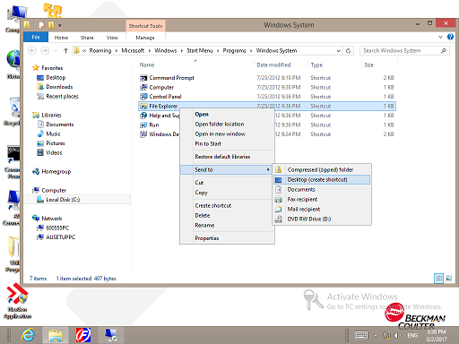

This document provides general instructions for navigating the Access2 console PC running Windows.
| For the following action...
|
Refer to...
|
| Adjusting the date and time settings
|
Step 1
|
| Pinging the AU
|
Step 2
|
| Navigate to the Registry Editor
|
Step 3
|
| Verify the IP address
|
Step 4
|
| Changing the display settings/resolution
|
Step 5
|
| Navigating to system software and windows applications
|
Step 6
|
| Creating program shortcuts
|
Step 7
|
-
Verify the date and time settings in Windows 8 from the Windows desktop.
-
Click on the clock at the bottom right corner of the Windows desktop.
-
In the pop up window select
Change date and time to adjust the time or select
Change time zone to adjust the time zone if needed.
Note: Coordinated Universal Time is the default setting and does not observe Daylight Savings.
-
When date, time, and time zone have been verified select
OK.
-
Pinging the AU
-
Press
Windows key, open the
Command Prompt icon or type
Command Prompt and open the program.
-
In the CMD window, enter
ping 192.168.2.4 and press
Enter.
-
Verify that the PC receives a reply from the instrument
-
Navigate to the Registry Editor
-
Press
Windows key, type
regedit and open the program.
Note: Once in the regedit program the navigation is the same as previous windows versions.
-
Navigate to
HKEY_LOCAL_MACHINE > Software > Beckman > NexStep
-
Close the Registry Editor when done.
-
Verify the IP address on the PC console.
-
Press
Windows key, type
network connections, select
Settings, and select
View Network Connections
-
Right click on the
Local Area Connection that is going to be verified. Select
Properties, then select
Internet Protocol (TCP/IPv) and choose
Properties.
-
Verify the IP address and the Subnet Mask are correct.
-
Close the Network Connections window when done
-
Change the display resolution.
Note: Windows 8 may require adjusting the screen resolution or display settings to make the user interface appear as a full screen.
-
Press
Windows key, type
Display and select
Settings option.
-
Open the
Change display settings icon.
-
Change the resolution to
1024 x 768, select
Apply, and
OK.
Note: If the monitor has blank space at the top and the bottom of the screen, then perform the following steps:
- Press
Windows key, type
graphics and open the
Intel HD Graphics Control Panel program.
- Select
Display and then check the
Scale Full Screen option.
- Select
Apply and
OK.
-
If the user interface has missing or misaligned display icons, then perform the following steps to correct the issue.
- Press the
Windows key, type
Display and select
Settings option.
- Open the
Display icon.
- Select
Smaller - 100% (default) and click
Apply.
-
Navigate to system software and windows applications.
Note: If there are applications that are used a lot and not found in the Start menu then it can be added. Refer to the shortcuts section of this procedure.
-
Press
Windows key to access all available applications in the
Start menu.
-
Select the application and double click to launch.
-
Create application shortcuts to the console PC Desktop/Start Menu/Taskbar
-
Create shortcut onto the
Desktop from the
Start Menu.
- Press
Windows, right click on the application in the
Start Menu and select
Open file location.
- Right click on the application, select
Send to > Desktop (create shortcut).
- Verify the shortcut is created successfully.

-
Create shortcut from the
Start Menu to the
Taskbar.
- Press
Windows key, right click on the application in the
Start Menu and select
Pin to taskbar located in the lower left.
- Verify the shortcut is created successfully.

-
Create shortcut into
Start Menu.
- Locate the application that is to be added through
Control Panel or typing the file name in the
Start Menu.
- Right click on the application and select
Pin to Start.
- Verify the shortcut is created successfully.